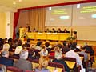
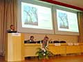
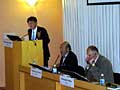
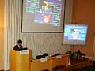
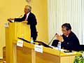
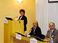
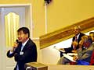
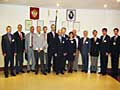
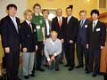

20-21 мая 2004 г. в Хабаровске на базе Института повышения квалификации специалистов здравоохранения Хабаровского края (ИПКСЗ) состоялась I Дальневосточная конференция по антимикробной терапии. Конференция была организована Межрегиональной ассоциацией по клинической микробиологии и антимикробной химиотерапии (МАКМАХ), Министерством здравоохранения Хабаровского края, ИПКСЗ, НИИ антимикробной химиотерапии (НИИАХ) Смоленской государственной медицинской академии. Параллельно с ней 20 мая проходила международная конференция «Современная фармакотерапия в урологии». В России конференция состоялась в рамках проекта ISC Disease Management Series. Организатором конференции с российской стороны стала МАКМАХ. В конференции приняли участие Российское общество урологов, Японская и Корейская урологические ассоциации.
20-21 мая 2004 г. в Хабаровске на базе Института повышения квалификации специалистов здравоохранения Хабаровского края (ИПКСЗ) состоялась I Дальневосточная конференция по антимикробной терапии. Конференция была организована Межрегиональной ассоциацией по клинической микробиологии и антимикробной химиотерапии (МАКМАХ), Министерством здравоохранения Хабаровского края, ИПКСЗ, НИИ антимикробной химиотерапии (НИИАХ) Смоленской государственной медицинской академии.
На церемонии открытия 20 мая со вступительными лекциями выступили президент Международного общества по химиотерапии (ISC) Ж.-К. Пешере (Швейцария) и министр здравоохранения Хабаровского края В.М. Савкова (Россия).
Доклады представили ведущие специалисты России, США и Швейцарии. На конференции были затронуты вопросы политики применения антимикробных препаратов, рационального выбора антибактериальной терапии инфекций верхних и нижних дыхательных путей, интраабдоминальных инфекций, антибиотикопрофилактика и современные возможности лечения сепсиса.
Главными спонсорами Дальневосточной конференции стали фармацевтические компании Aventis и KRKA, а также Bristol-Myers Squibb, Lek, Pliva и Pfizer.
Всего на конференции прозвучало 24 доклада, из них 12 были представлены иностранными и 12 - российскими учёными.
Международная конференция «Современная фармакотерапия в урологии»
20-21 мая 2004 г. параллельно с I Дальневосточной конференцией по антимикробной терапии проходила международная конференция «Современная фармакотерапия в урологии». В России конференция состоялась в рамках проекта ISC Disease Management Series. Организатором конференции с российской стороны стала МАКМАХ. В конференции приняли участие Российское общество урологов, Японская и Корейская урологические ассоциации.
Заседания первого дня были посвящены вопросам современной фармакотерапии рака простаты, доброкачественной гиперплазии предстательной железы (ДГПЖ) и эректильной дисфункции.
Во второй день, 21 мая, научные заседания обеих конференций прошли в одной аудитории. Слушатели имели возможность прослушать доклады, посвящённые инфекциям в урологии - этиологии, чувствительности уропатогенов к антимикробным препаратам, лечению и профилактике внебольничных и нозокомиальных инфекций мочевых путей, простатита и инфекций, передающихся половым путём.
В число докладчиков вошли признанные мировые учёные в области урологии и терапии инфекций.
Все лекции и презентации синхронно переводились на русский или английский языки.
На сессии стендовых докладов было представлено 13 сообщений, темы которых были посвящены раку предстательной железы, эректильной дисфункции, ДГПЖ и инфекциям в урологии.
В рамках конференций работала выставка фармацевтических компаний-спонсоров.
Участники
В работе двух конференций приняло участие более 700 человек из различных городов России (92%) и стран зарубежья (8%). Из Хабаровского края конференции посетили 452 (72%) участника, из Приморского края 58 (9%), Амурской области 26 (4%), различных городов Центральной России 15 (2%), из Японии, Кореи, США, Германии, Швейцарии - (8%) участников. Аудитория конференции была представлена терапевтами - 116 человек (19%), урологами - 98 (16%), педиатрами - 94 (15%), клиническими фармакологами - 39 (6%), анестезиологами-реаниматологами - 34 (5%), акушерами-гинекологами - 28 (4%), а также средним медицинским персоналом - 24 (3,5%).
24 мая 2004 г. состоялся семинар по микробиологии, докладчиками на котором выступили преподаватели НИИАХ СГМА (Смоленск) и медицинского центра Херши (Пенсильвания, США). В работе семинара приняло участие 49 микробиологов, эпидемиологов и бактериологов Дальневосточного региона России.
Фотографии с конференции
(Выберите картинку для просмотра увеличенного изображения)

| Церемония открытия | | 
| Президент ISC Ж.-К. Пешере |

| Выступление корейских урологов (М.-К. Чунг) | | 
| Выступление японских урологов (Х. Кога) |

| Выступление немецких урологов (К. Набер) | | 
| Выступление российских урологов (Т. Перепанова) |

| Дискуссия в рамках урологической конференции | | 
| Организационный комитет I Дальневосточной конференции |

| Президенты и секретари МАКМАХ, Японской, Корейской урологических ассоциаций и Международного общества по химиотерапии | |
Последнее изменение: 03.08.2004